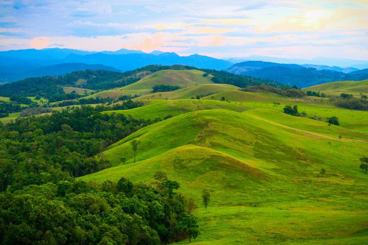
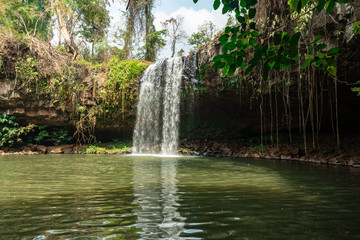

From a volcanic crater lake to a vast national park, here is where to spend your days in Ratanakiri.

A forest-ringed volcanic lake south of Banlung. Visitors can walk the lakeside trail and swim in the designated area; follow local guidance and posted rules.
View on map
A lake in the Banlung area. The local collection includes an aerial view of the town beside water; confirm public access and facilities locally.
View on mapA waterfall near Banlung. Ask locally about the route, access and current water conditions before setting out.
View on map
A forest waterfall southeast of Banlung. Conditions vary by season; check local access and follow signs around the site.
View on map
A waterfall in the Banlung area. Visit with care on wet paths and check current access with a local host.
View on map
A protected forest and highland landscape in northeastern Cambodia. Remote visits require advance planning; check current access and travel with local guidance.
View on map
Visit only by invitation or through a community-led host. Ask about permission, photography and appropriate conduct before you go.
Learn about communitiesMost first-time visitors combine Yeak Laom, one waterfall and a village visit in a single day.